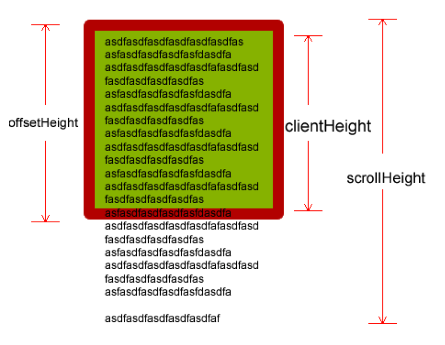

js特效 - Day3
一、client家族
1.1 clientWidth和clientHeight
网页可见区域宽： document.body.clientWidth;
网页可见区域高： document.body.clientHeight;
1.2 clientLeft和clientTop
clientLeft，clientTop
返回的是元素边框的borderWidth，
如果不指定一个边框或者不定位改元素，其值就为0
1.3 offset、client和scroll的区别分析
left和top分析：
clientLeft: 左边边框的宽度；clientTop: 上边边框的宽度
offsetLeft: 当前元素距离有定位的父盒子左边的距离；offsetTop: 当前元素距离有定位的父盒子上边的距离
scrollLeft: 左边滚动的长度; scrollTop: 上边滚动的长度;
width和height分析
clientWidth\/Height: 内容 + 内边距
offsetWidth\/Height: 内容 + 内边距 + 边框
scrollWidth\/Height: 滚动内容的宽度和高度

二、获取屏幕的可视区域
ie9及其以上的版本、最新浏览器
window.innerWidth, window.innerHeight标准模式浏览器
document.documentElement.clientWidth, document.documentElement.clientHeight怪异模式
document.body.clientWidth, document.body.clientHeight通用写法
function client() { if(window.innerWidth){ // ie9及其以上的版本 return{ width: window.innerWidth, height: window.innerHeight } }else if(document.compatMode != 'CSS1Compat'){ // 怪异模式 return{ width: document.body.clientWidth, height: document.body.clientHeight } } // 标准 return{ width: document.documentElement.clientWidth, height: document.documentElement.clientHeight } }
三、常用窗口事件-onresize
当窗口或框架的大小发生改变的时候就会调用；
onresize一般被运用于自适应页面布局等多屏幕适配场景；
应用：当屏幕的宽度>=960时，页面的背景颜色为红色；当屏幕的宽度>=640时，页面的背景颜色为蓝色；当屏幕的宽度<640时，页面的背景颜色为绿色？
补充：获取屏幕的分辨率：window.screen.width window.screen.height
四、JS的事件传递机制
4.1 冒泡机制
气泡从水底开始往上升，由深到浅，升到最上面。在上升的过程中，气泡会经过不同深度层次的水。相对应地：这个气泡就相当于我们这里的事件，而水则相当于我们的整个dom树；事件从dom 树的底层，层层往上传递，直至传递到dom的根节点。

IE 6.0:
- div -> body -> html -> document
其他浏览器:
- div -> body -> html -> document -> window
- 注意：不是所有的事件都能冒泡，以下事件不冒泡：blur、focus、load、unload
4.2 阻止冒泡的方法
标准浏览器 和 ie浏览器
w3c：event.stopPropagation() proPagation 传播 传递
IE：event.cancelBubble = true bubble 冒泡 cancel 取消
兼容的写法
var event = event || window.event; if(event.stopPropagation){ // w3c标准 event.stopPropagation(); }else{ // IE系列 IE 678 event.cancelBubble = true; }
4.3 获取当前操作对象
开发中，当执行一个事件时需要去知道触发这个事件的对象是谁？那么，如何获取：
火狐、谷歌 event.target
ie 678 event.srcElement
- 一般是获取这个对象的id，兼容的写法如下：
var targetId = event.target ? event.target.id : event.srcElement.id;
4.4 获取用户选中的内容
标准浏览器
- window.getSelection()
- ie 获得选择的文字
- document.selection.createRange().text;
兼容性的写法
var selectedText; if(window.getSelection){ // 标准模式 获取选中的文字 selectedText = window.getSelection().toString(); }else{ // IE 系列 selectedText = document.selection.createRange().text; }微博分享
http://v.t.sina.com.cn/share/share.php?searchPic=false&title=' + selectedText + '&url=http://www.jianshu.com/u/ce8eba0dbfb6'打开新窗口
/* * 第一个参数是url * 第二个参数是窗口的名称 要不要打开新的窗口 * 第三个参数是窗口的描述 窗口的位置,尺寸等 * */ window.open('http://www.jianshu.com/u/ce8eba0dbfb6','newWindow','left=500,top=200,width=800,height=500');
五、综合动画函数封装
在开发过程中，会接触到很多动画，比如：帧动画，核心动画，转场动画......，各种复杂的动画都是由简单的动画封装而成的，那么，动画的基本原理是：盒子的offsetLeft + 步长。
匀速动画函数封装：
// 匀速动画函数 function animate(obj, target, speed) { // 1.清除定时器 clearInterval(obj.timer); // 2. 判断方向 var dir = target > obj.offsetLeft ? speed : -speed; obj.timer = setInterval(function () { obj.style.left = obj.offsetLeft + dir + 'px'; // 2.1 清除定时器 --> offsetLeft == 目标值 if (Math.abs(target - obj.offsetLeft) <= speed) { clearInterval(obj.timer); // 处理偏差情况 obj.style.left = target + 'px'; } }, 10)； }